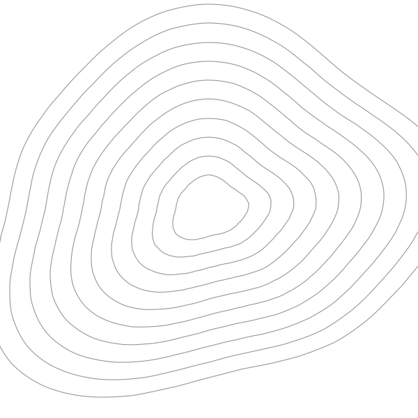

Tuesdays in Ms. Glasgow’s room, #1636. Food, GeoGuessr, and competition previews. New members welcome any week — join the Discord.

We study the world — its landforms, its people, its climate — and then we put that knowledge to work in competitions and original research. Come for the GeoGuessr rounds, stay for a paper with your name on it.
The club is broad on purpose. You can be casual, competitive, research-focused, or all three — and you can change your mind in November.
Learn the world properly, not just the trivia version of it.
Take what you know into a room with a buzzer or a panel of judges.
Pick a question about where you live and actually answer it.
The same rhythm every week: a quick start, something useful, then time to build. Walk in with nothing and you’ll still have something to do.
GeoGuessr, a map sprint, or current-event geography.
A geography concept, an Earth-science topic, or a data skill.
Quiz rounds, map work, team practice, or a short activity.
Competition planning, research teams, questions, next steps.
Tuesdays after school, every week. Come late if you have to.
Room 1636 — Ms. Glasgow’s room. Same room all year.
Discord carries announcements, reminders, and every resource we use.
Three ways to turn interest into something on a transcript. Pick whichever sounds best — you can switch, combine, or sit them out entirely.
Fast recall and quiz-bowl energy. Practice rounds, map knowledge, and current events.
Best fit: students who like trivia, maps, and quick team rounds.
Original STEM research. Choose a narrow Earth-science question, analyze real data, write it up, present it, and compete for scholarships.
Best fit: students who want a paper with their name on it.
A student sustainability competition. Develop a realistic environmental solution backed by evidence and built for impact. $200,000 in prizes.
Best fit: students who’d rather fix something than just study it.
Speed and accuracy are built over months, not the week before the tournament.
Good projects are local, measurable, and narrow. You don’t need a lab — you need one good question and data somebody already published.
Narrow, local, and actually answerable.
Public datasets, satellite imagery, your own measurements.
Find patterns you can defend to someone skeptical.
A paper or a poster, with the evidence attached.
Stand up, explain it, and compete.
JSHS is a path to conduct original STEM research, present it, and compete for scholarships.
The Earth Prize takes sustainability solutions aimed at global environmental challenges.
Both are open to first-year members. You do not need prior research experience — that is what the club is for.
So you know what you’re signing up for. The point is progress, not a room full of random meetings.
By May we want more active members, stronger competition teams, finished research and sustainability projects, and people who learned something they’ll keep.
Ask any of us about competition teams, research ideas, meeting activities, or how to get involved.